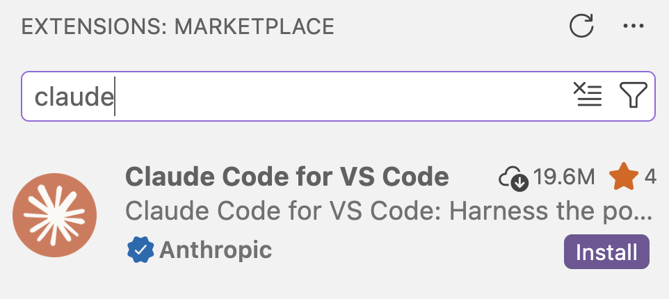

Positron installation and setup
Getting started with this highly recommended new IDE for R
![]()
1 Overview
Positron is a new IDE (Integrated Development Environment) created by Posit, the company behind RStudio. It’s really an alternative to RStudio — and if you’re currently using RStudio, it’s worth considering switching to Positron for a few reasons:
- Positron, not RStudio, will be the main focus of development for Posit moving forward.
- In RStudio, Posit’s AI coding assistant (Posit Assistant) can only be used with a Posit AI subscription, while in Positron, it can be used with a GitHub login or with an API key1.
- If you’re also using VS Code: it is built on VS Code and extremely similar to it2.
- If you’re also using Python: Positron has much better support for Python than RStudio.
So, if you’d like to experiment with using in-editor AI while coding in R during and after this workshop, Positron will be the way to go. Here, we’ll install Positron and set up “Posit Assistant” for AI assistance in R.
2 Installing Positron
If you have an OSU-managed computer, whether you can (easily) install Positron depends on your operating system and whether you have local administrative privileges:
| Have administrative privileges | No administrative privileges | |
|---|---|---|
| Windows | ✅ | ❌ (Contact the IT Service Desk) |
| Mac | ✅ | ✅ 3 |
So, if you have a Windows OSU-managed computer and no local administrative privileges, you will not be able to follow the below instructions.
Go to the Positron download page and check the box to accept the license agreement.
Download the latest release for your operating system:
- Mac: Look for the
.dmgfile (Intel or Apple Silicon) - Windows: Look for the
.exeinstaller - Linux: Look for the
.debor.rpmfile depending on your distribution
- Mac: Look for the
Install Positron:
- Mac: Open the
.dmgfile and drag Positron to your Applications folder.- If you have a personal computer or an OSU computer with local administrative privileges, you can use the system-wide (standard) Applications folder.
- If you have an OSU-managed computer without local administrative privileges, you should use your personal Applications folder in your Home folder.
- Windows: Run the
.exeinstaller and follow the prompts - Linux: Use your package manager to install the downloaded file
- Mac: Open the
Open the program!
3 Setting up Posit Assistant
Posit Assistant is Positron’s built-in AI coding assistant, designed specifically for data analysis workflows. Among other neat features, it has access to your R/Python session and can see your data frames and variables out of the box.
Posit has its own paid AI service, but fortunately, it’s possible to authenticate in many ways in Positron (unlike in RStudio!). For us, it makes much more sense to use authenticate with GitHub Copilot and/or Claude Code, the latter via the OSU LiteLLM API key.
Unlike with VS Code, we will do this set up on your own computer, not on OSC. The configuration will carry over to OSC, though, when you follow the connection steps later on.
3.1 Install the Posit Assistant extension
Open the Extensions view in Positron by clicking the Extensions icon in the Activity Bar (the narrow, leftmost sidebar).
In the search box, start typing “posit assistant”.
Click Install on the “Posit Assistant” extension by Posit.
{kind=link}
{kind=link}
3.2 Authentication via the OSU LiteLLM API
In this workshop, the recommended approach is to use the same OSU LiteLLM API key we used for Claude Code in VS Code, as it’s approved for use with institutional data, and easy to set up.
Click on the (newly added) Posit Assistant icon in Positron’s Activity Bar (the narrow bar on the far left):
It should show the following — click “Help me set it up” and then “Configure LLM providers:”
{kind=link}
{kind=link}
{kind=link}
At the top, select Custom Provider from the list of providers, enter the following information, then click Sign in:
- API Key: Use the API key from the
~/claude/settings.jsonfile at OSC, or the key you obtained from https://go.osu.edu/api-fluency. - Base URL:
https://litellm.cloud.osu.edu
- API Key: Use the API key from the
If it worked, the assistant panel should now show:
In the bottomright of the prompt box, click on Select Model:
The models are available under “OpenAI Compatible” (the first option in the list) — Click “More models”:
In the (long!) dropdown list, select
claude-opus-4-6. Then, the prompt should look something like this:
{kind=link}
{kind=link}
{kind=link}
{kind=link}
{kind=link}
You don’t need to stick to claude-opus-4-6 all the time and should feel free to experiment with other models later. However, not all models available through the OSU LiteLLM service may work with Posit Assistant’s Custom Provider. If you get an “internal error” when trying to use the assistant, switch to a different model and try again.
After the toolkit setup session, you will have a ~/claude/settings.json at OSC. Open that file (e.g. via VS Code) to see the key.
Alternatively, and after the workshop, you can use an API key you retrieved from https://go.osu.edu/api-fluency.
3.3 Authentication via GitHub
If you’ve done the previous setup with the OSU LiteLLM API key, this step is not required. However, like in VS Code, GitHub Copilot (but in this case, via Posit Assistant) will provide inline code completions, which access via the API key does not.
If you’re happy with just credits via the OSU LiteLLM API key, you can skip this section!
If it’s not open already, click on the Posit Assistant icon in Positron’s Activity Bar (the narrow bar on the far left):
Assuming you did the setup above, Posit Assitant will already be active and not automatically prompt you to set things up. In that case, click the cog wheel icon at the top of the Posit Assistant panel and select Configure LLM providers 4.
Select the provider “GitHub Copilot” and click sign in (The by default selected
OAuthfor Authentication is correct):A browser window will open asking you to authorize Posit Assistant to access your GitHub account. Log in and authorize as requested.
Now, when clicking on the model selection indicator in the Posit Assistant prompt, you’ll see the GitHub Copilot models available:
A screenshot of the model selection pop-up. In this case, GitHub Copilot has also been authenticated, and those models are shown at the top. Below it are “OpenAI Compatible” models, where you can click on “More models” to select a model.
{kind=link}
{kind=link}
3.4 Testing Posit Assistant
Let’s verify that it works:
The “CONSOLE” tab in the bottom Positron panel should be open. By default, this may be an R console, but it could also be a Python console.
NoteIf you’re seeing a Python console instead of R (Click to expand)In the top-right corner of the Positron window, you should see something like this:
Click on the Python indicator, and then select New Console Session:
In the screenshot, Python is selected, but you’ll want to go on to select the option below it. Switch to R by selecting an appropriate R version:
When done, you should see this in the top-right instead…
…and your console should have switched to R as well.
In the R console, create a simple data frame:
df <- data.frame(x = 1:10, y = rnorm(10))In the Posit Assistant panel, try asking:
Create a scatter plot of x vs y from df
Posit Assistant should generate code for a plot and ask for permission to run it: click Allow.
It produces the plot and shows it in its own panel, along with some neat suggestions for next steps! The plot should also appear in the Plots panel, like in RStudio, since it was actually generated on your computer with R code.
{kind=link}
{kind=link}
{kind=link}
{kind=link}
{kind=link}
{kind=link}
Posit Assistant can see your R session’s variables, including data frames. This means you can ask questions about your data without having to explicitly describe it — the assistant already knows what’s in your environment!
4 Connecting to OSC compute nodes
Positron, being built on VS Code, can connect to remote systems like OSC using the same SSH configuration. If you’ve already set up VS Code to connect to OSC following the earlier setup instructions, your SSH configuration will automatically work in Positron too.
If you haven’t set up the SSH connection to OSC in VS Code (or any other editor):
You’ll need to do so before you can connect from Positron. Follow the instructions in the VS Code setup guide.
Or, if you don’t want to set this up in VS Code at all, you can start at Configure the connection and instead do this in Positron (it’s identical!).
4.1 Connecting to OSC from Positron
Assuming the SSH configuration is in place:
Open the Command Palette (Ctrl/⌘+Shift+P or
View>Command Palette) and type “SSH connect”.Select
Remote-SSH: Connect to Host...and then chooseosc-cardinal-compute:A new Positron window will open and connect to OSC. This may take 30 seconds or more while a compute node is being allocated. Enter your OSC password if prompted.
Once connected, you may see a pop-up asking whether you “trust the authors” — click Trust and Continue.
Open an appropriate folder, like your workshop folder:
File>Open Folder...> enter/fs/scratch/PAS3454/people/<user>.
{kind=link}
Like in VS Code, after connecting once, the folder will appear in Positron’s “Recent” list on the welcome screen, making it easy to reconnect with a single click in future sessions.
4.2 Loading R at OSC
R is not loaded by default at OSC. The easiest way to make sure Positron will find R as it connects to OSC is by adding the R module to your Bash settings file (~/.bashrc):
Open a terminal in Positron (e.g.,
Terminal>New Terminal)Add the module load command to your
~/.bashrcfile:echo 'module load gcc/12.3.0 R/4.5.0' >> ~/.bashrcReload the window: Open the Command Palette (Ctrl/⌘+Shift+P or
View>Command Palette) and start typing “Reload Window”, then select “Developer: Reload Window”.Positron should automatically start R in the console.
Adding this module load command to your Bash settings file is not a permanent solution, because the version(s) of R available on OSC and/or that you personally want to use may change. On the other hand, it does currently work on all three OSC clusters, since they have the same R modules.
4.3 Installing the Posit Assistant extension at OSC
The Posit Assistant does need to be separately installed at OSC: open the Extensions, find Posit Assistant, and click Install in SSH: osc-cardinal-compute.
{kind=link}
Otherwise, the Posit AI assistant will work the same way when connected to OSC as it does on your local computer, and you shouldn’t need additional setup!
4.4 Open a folder
Positron really wants you to open a specific folder — you may have already seen it prompt you when doing the above setup on your own computer.
At OSC, just like with VS Code, you should connect to the /fs/scratch/PAS3454/people/<user> folder, where <user> is your OSU username. In the Explorer, click on the “Open Folder” button and enter this path.
{kind=link}
5 Appendix: Setting up Claude Code (optional)
Claude Code works in Positron just like it does in VS Code with an API key. Since you’ve already set up Claude Code for VS Code and have a ~/claude/settings.json file, the setup in Positron is straightforward.
You may consider doing this if you’re used to Claude Code or prefer it over Posit Assistant for certain tasks. Otherwise, you can skip this section and just use Posit Assistant — recall that you can use Posit Assistant with the OSU LiteLLM API key, which is also approved for institutional data.
The instructions below assume you’re at OSC, where you have a ~/.claude/settings.json file with your API key. Adjusting this for your personal computer is pretty straightforward, though: you’ll need to download the settings.json file from OSC and put it at the same location on your own computer (~/.claude/settings.json).
5.1 Install the Claude Code extension
Open the Extensions view in Positron:
- Click the Extensions icon in the Activity Bar (the leftmost sidebar), or
- Press Ctrl/⌘+Shift+X
In the search box, type “claude code”.
Find the “Claude Code for VS Code”5 extension by Anthropic and click Install:

Example of the Claude Code extension in the Extensions view
5.2 Configure authentication
Since you already have a ~/claude/settings.json file from your earlier VS Code setup, Claude Code should automatically pick it up and authenticate:
After installing the extension, look for a new CLAUDE CODE tab in the sidebar (you may need to widen the sidebar to see both “CHAT” and “CLAUDE CODE” tabs).
Click on the CLAUDE CODE tab.
You should briefly see authentication messages, then the interface should load automatically.
Once loaded, you’ll see a prompt box similar to Posit Assistant’s interface.
Footnotes
Moreover, in Positron, you can use the Claude Code extension just like in VS Code, which is not possible in RStudio.↩︎
But with panels for Plots, your Environment, a Console, and so on, like you’re used to from RStudio.↩︎
But you should install it in your personal, not system-wide, Applications folder.↩︎
This window can also be invoked via the Command Palette (Ctrl/⌘+Shift+P) and typing “Configure”, or by clicking on the “Person icon” above the cog wheel way at the bottom of the Activity Bar. In both of those contexts, it’s listed as “Configure Language Model providers”.↩︎
Yes, “for VS Code”, not “for Positron”. Positron isn’t just similar to VS Code but is really a variant (“fork”) of it.↩︎